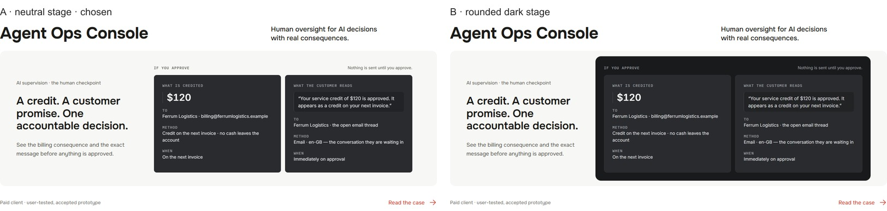
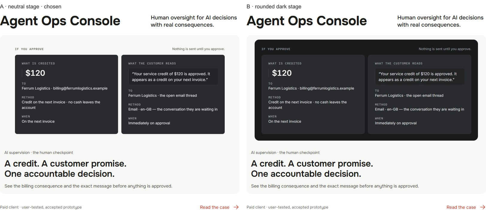
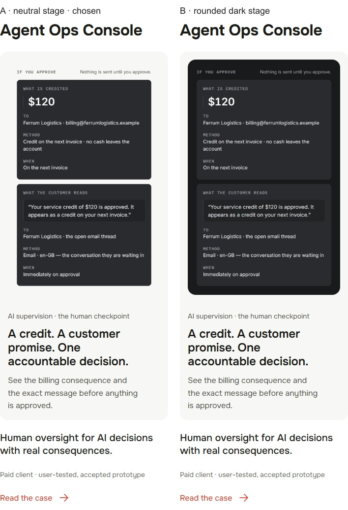
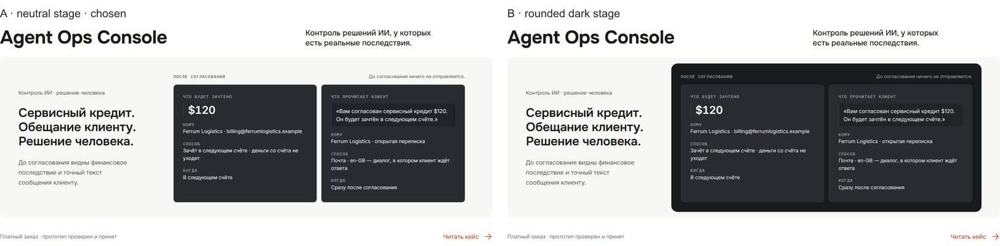
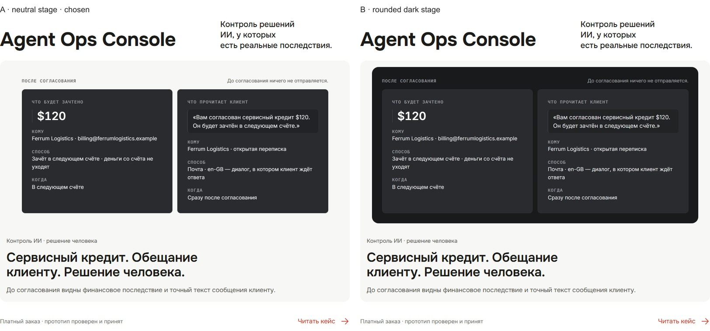
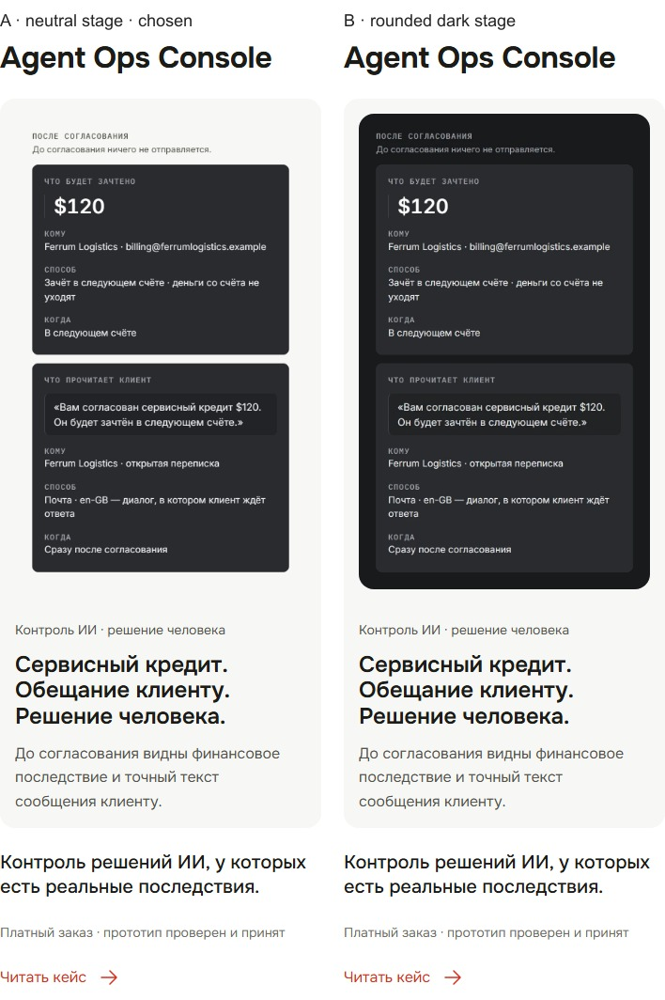
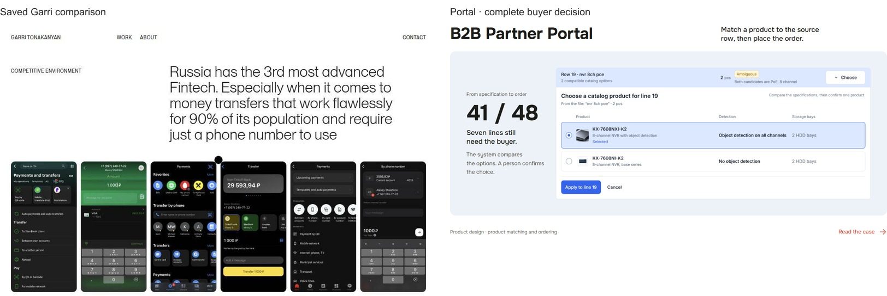
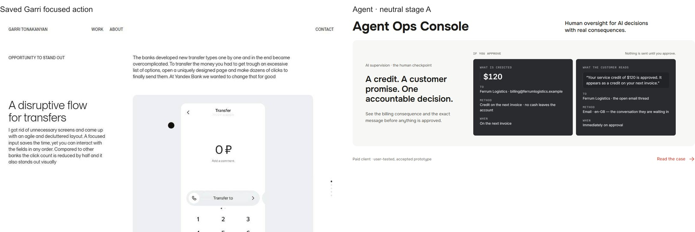

Homepage cover polish
Baseline 43eb0b2 · isolated branch codex/home-cover-polish-2026-11-01. Implementation choice A; independent visual acceptance pending. No merge, deploy or Figma edit.
Final AFTER includes the owner's Portal corner correction: transparent external canvas, original rounded border intact. Matched Chromium screenshots: DPR 1, reduced motion, identical locale and viewport. Raw PNGs are untouched; labeled comparison sheets resize proportionally, both columns at the same scale. Covers have natural heights.
Agent A / B
Agent variants · EN · 1440px

Agent variants · EN · 1024px

Agent variants · EN · 390px

Agent variants · RU · 1440px

Agent variants · RU · 1024px

Agent variants · RU · 390px

BEFORE / AFTER
Saved premium direction
Actual archived Garri screenshots: comparison of native options and a single focused action on a neutral stage. No fresh live-reference capture claimed. See REPORT.md for the specific decisions and limits.

